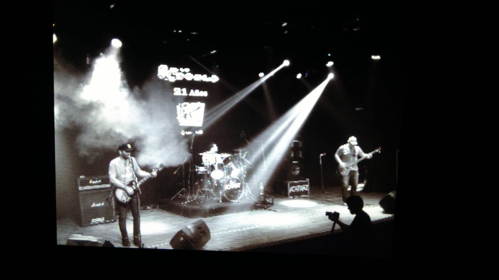

Oscura Golondrina
CHRIS NUÑEZ, LEAN, STAVO ADRIAN. Video Edicion de Fotos, GRABADO EL 6 DE DICIEMBRE DE 2019 EN ACATRAZ, BUENOS AIRES, ARGENTINA.
El Rock vive en las calles
CHRIS NUÑEZ, LEAN, STAVO ADRIAN. Video Edicion de Fotos, GRABADO EL 6 DE DICIEMBRE DE 2019 EN ACATRAZ, BUENOS AIRES, ARGENTINA.